Read the evidence.
Cleaner excerpts from Granite Falls public records, paired with context explaining why each document matters.
Officials repeatedly discussed public-records exposure.
The emails below document concern about whether Granite Falls would receive Flock-related public-records requests. In a September 2026 meeting, City Manager Jeff Balentine told this project that those concerns were raised to protect citizen ALPR data from being obtained through records requests. Washington’s ESSB 6002 has since exempted ALPR data from public inspection and copying under the Public Records Act.
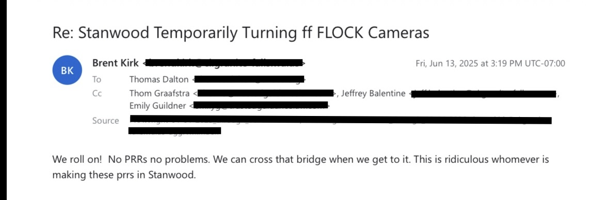
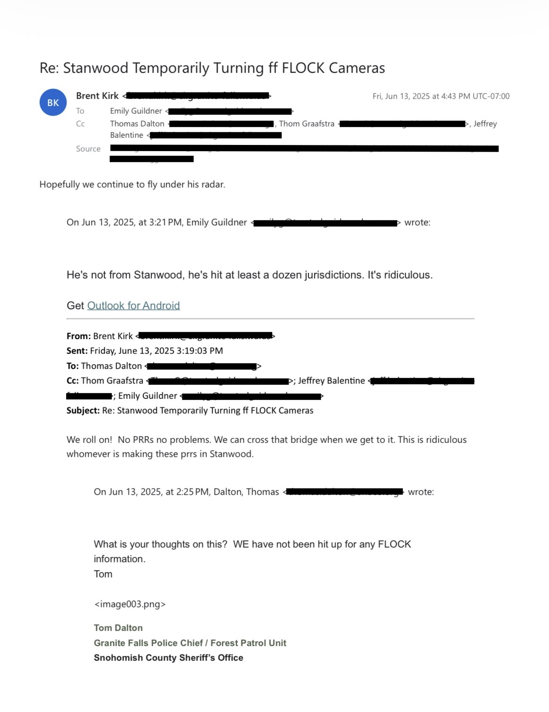

Balentine’s explanation provides important context for the correspondence. It does not change this project’s policy concern: a surveillance program that officials believe must operate under fear of a public-records request is a poor foundation for transparent public oversight. The emails establish what officials wrote; they do not by themselves prove unlawful withholding of any particular request.
Counsel circulated a legislative template.
City counsel circulated a template asking Washington legislators to create a specific Public Records Act exemption for ALPR data. The subsequent thread discusses legislative advocacy and Flock's position that the agency, not Flock, owns the data.
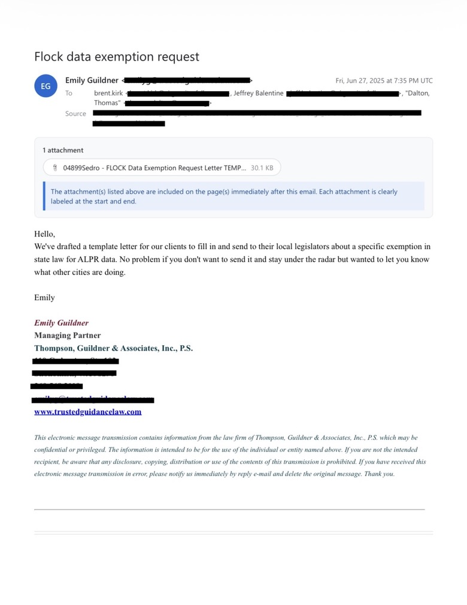

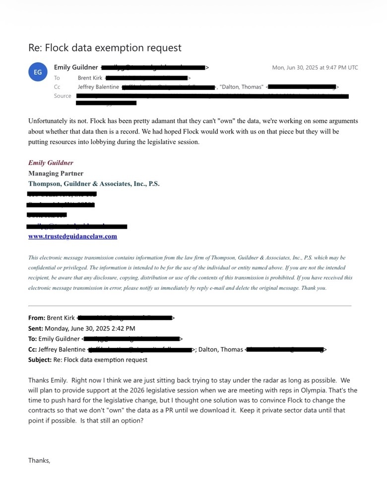
The record also contains the City's case for Flock.
Chief Tom Dalton supplied examples that he said showed Flock assisting with a fatal hit-and-run investigation, a mental-health response, search-and-rescue and an illegal-dumping investigation. Including the City's claimed benefits is necessary to present the record fairly.
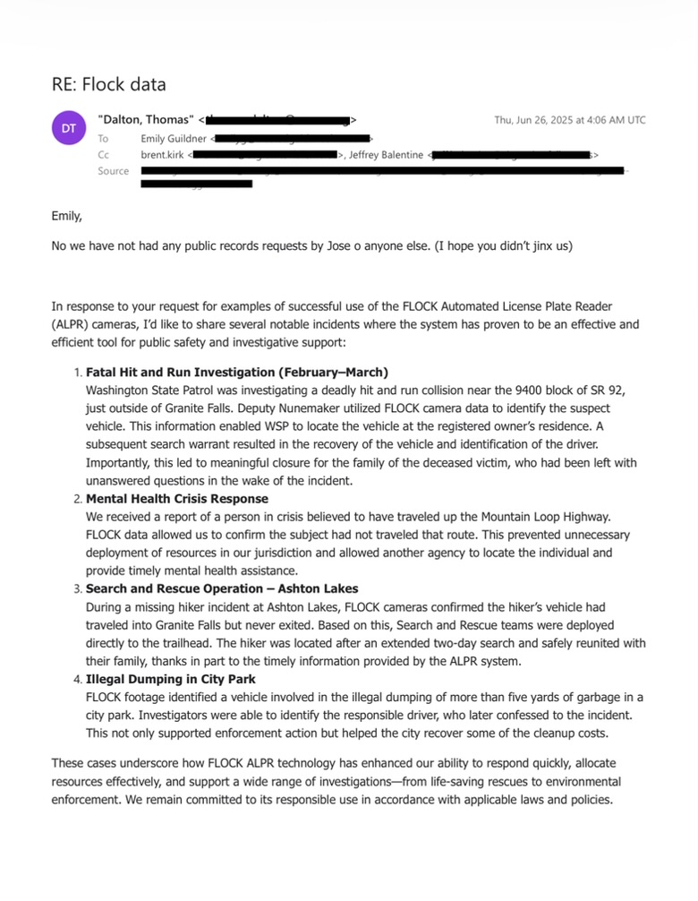
The City asked Flock for a technical solution.
Deputy City Manager Jeff Balentine asked Flock Legal about a cloud-based portal that could reduce administrative burden and potential penalties when producing Flock records. Flock responded that product development was already addressing some of the issues.

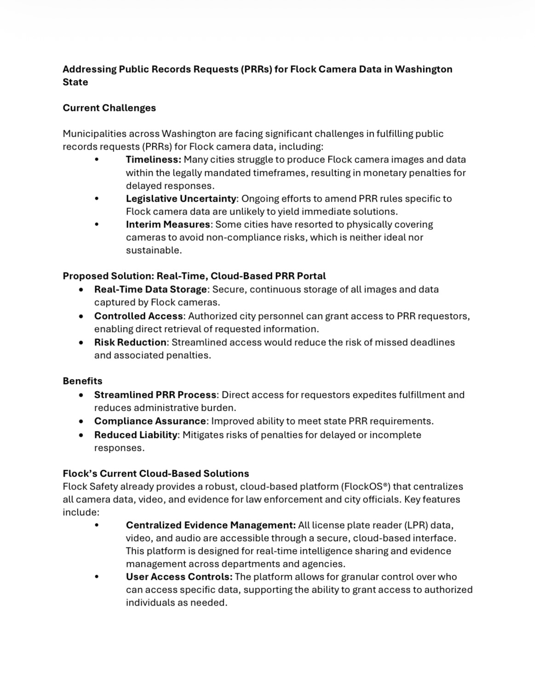
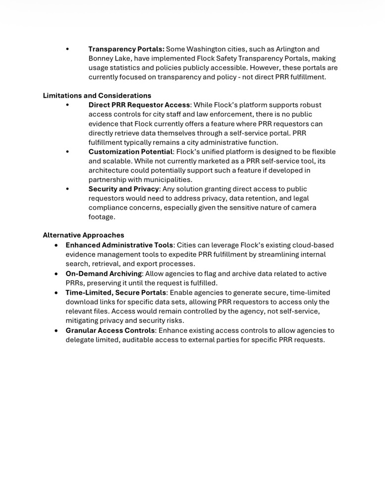
Police leadership made renewal a priority and pushed for broader rules.

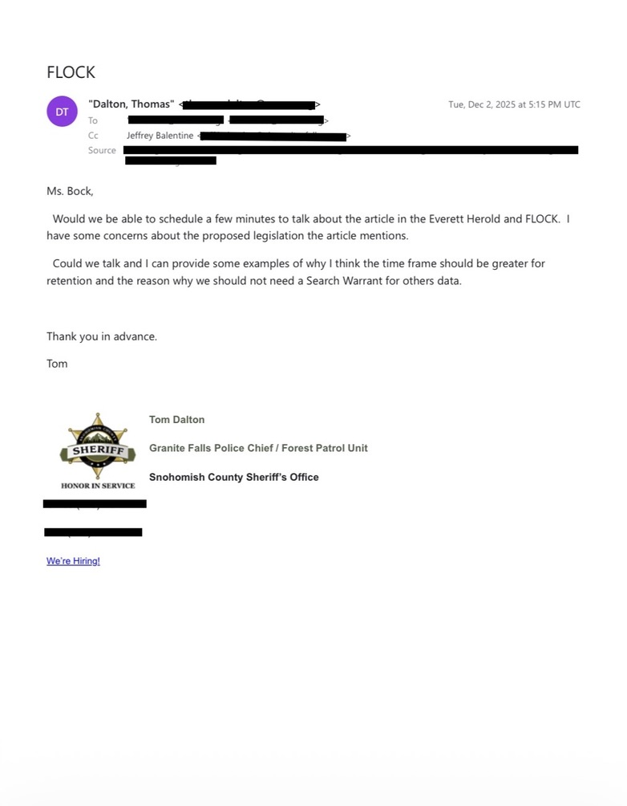
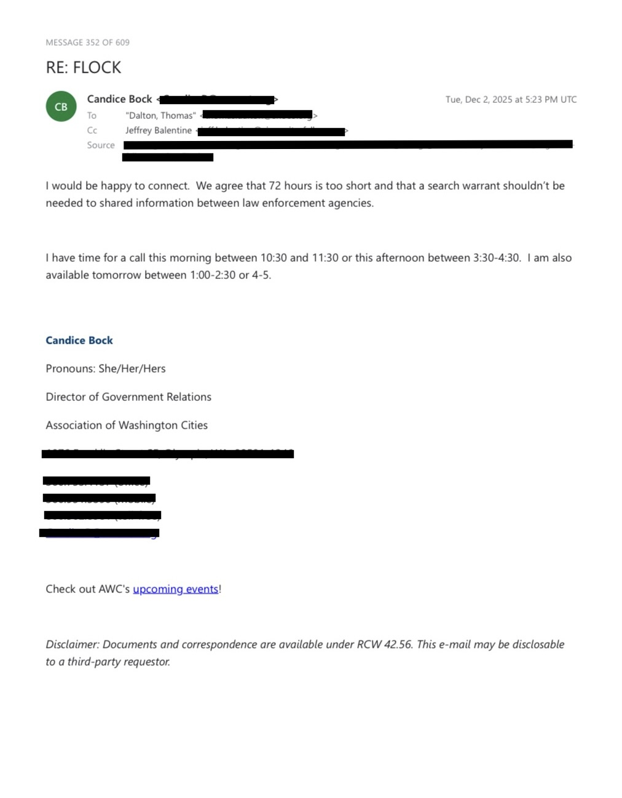
Opposition existed inside City government too.
Councilmember Bruce Straughn wrote that he opposed the original Flock contract and remained opposed. He later asked for another Council discussion and a legal interpretation of developing court rulings.

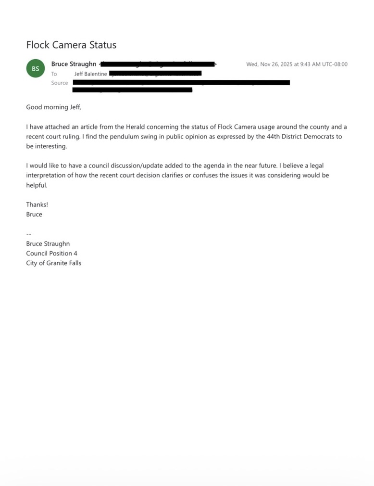
The cameras were collecting tens of thousands of reads.
A five-day dashboard sample from Feb. 13–17, 2025 covers five active cameras and shows 40,470 total vehicle reads and 28,515 unique vehicle reads. Separate 2025 correspondence shows city staff arranging to trim a tree that was blocking a 100th Street Flock camera.
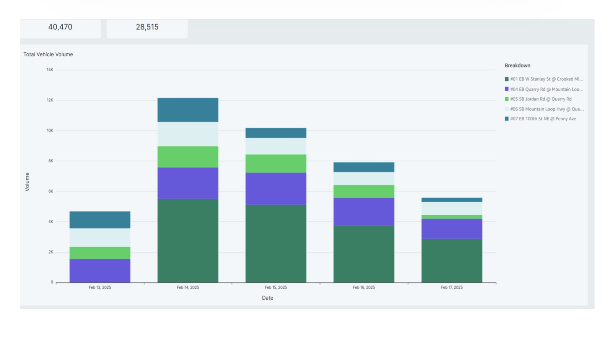

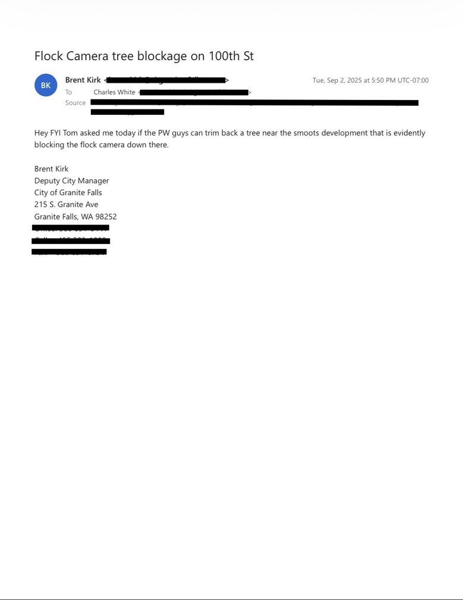
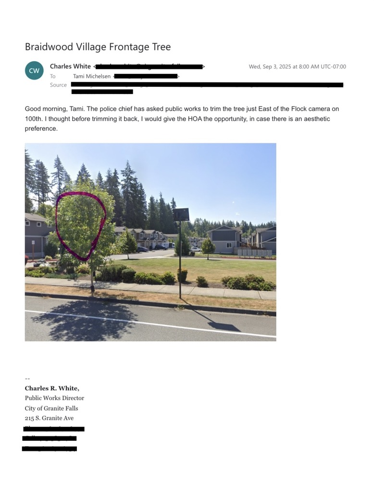
Seven cameras, $26,784.05 billed.
The invoice lists seven Flock Safety Falcon cameras plus implementation charges, with a balance due of $26,784.05.